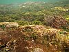

algae

Definition: Algae (UK: , US: ; singular alga ) is an informal term for a large and diverse group of photosynthetic eukaryotic organisms. It is a polyphyletic grouping that includes species from multiple distinct clades. Included organisms range from unicellular microalgae, such as Chlorella, Prototheca and the diatoms, to multicellular forms, such as the giant kelp, a large brown algae which may grow up to 50 metres (160 ft) in length. Most are aquatic and lack many of the distinct cell and tissue types, such as stomata, xylem and phloem that are found in land plants. The largest and most complex marine algae are called seaweeds, while the most complex freshwater forms are the Charophyta, a division of green algae which includes, for example, Spirogyra and stoneworts.
Source: Wikipedia
Wikipedia Page (Something wrong with this association? Let us know.)
Wikidata Page (Something wrong with this association? Let us know.)